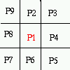

Hilditch's Algorithm
for
Skeletonization
Defining Skeletonization
Skeletonization is the process of peeling off of a
pattern as many pixels as possible without affecting the general shape
of the pattern. In other words, after pixels have been peeled off, the
pattern should still be recognized. The skeleton hence obtained must have
the following properties:
When these properties are satisfied, the alogorithm must stop.
Following is a pattern and its skeleton.
T-Shaped Pattern |
The skeleton |
Skeletonization is useful when we are interested not in the
size of the pattern but rather in the relative position of the strokes
in the pattern (Character Recognition, X, Y Chromosome Recognition)
There are several algorithms which were designed for this aim. in this project we are concerned with one of them namely the Hilditch's Algorithm.

Consider the following 8-neighborhood of a pixel p1

We want to decide whether to peel off p1 or keep it as part of the resulting skeleton. For this purpose we arrange the 8 neighbours of p1 in a clock-wise order and we define the two functions:
B(p1) = number of non-zero neighbors of p1
and
A(p1) = number of 0,1 patterns in the sequence p2,p3,p4,p5,p6,p7,p8,p9,p2
B(p1)=2 , A(p1)=1 B(p1)=2, A(p1)=2
There are two versions for Hilditch's algorithm, one using a 4x4 window and the other one using a 3x3 window. Here we are concerned with the 3x3 window version.
Hilditch's algorithm consists of performing multiple passes on the pattern and on each pass,the algorithm checks all the pixels and decide to change a pixel from black to white if it satisfies the following four conditions:
Let us view each of the above conditions separately.
Condition 1 : 2 <
= B(p1) < = 6
This condition combines two sub-conditions, first that the
number of non-zero neighbors of p1 is greater than or equal to 2 and second
that it be less than or equal to 6. The first condition ensures that no
end-point pixeland no isolated one be deleted ( any pixel with 1 black
neighbor is an end-point pixel), the second condition ensures that the
pixel is a boundary pixel.
B(p1)=1B(P1)=0 B(p1)=7
As the picture makes it clear, if B(p1)=1, then p1 is a skeleton
tip-point and should not be deleted. If B(p1)=0, then p1 is an isolated
point and should also be kept (in case it is a noise, it is not the job
of the skeletonization process to delete the pixel (it is the job of the
noise removal algorithm). If B(p1)=7, p1 is no more on the boundary of
the pattern and thus should not be a candidate for remaoval.
Condition 2 : A(p1)=1
This is a connectivity test. In fact, if you consider the below pictures where A(p1)>1, you can see that by changing p1 to 0 the pattern will become disconnected.
A(p1)=2 A(p1)=2 A(p1)=3
Condition 3 : p2.p4.p8
= 0 or A(p2)!=1
Here is an example where Here is one example where A(p2) is not 1 . p2.p4.p8=0 .
Here is one example where
p2.p4.p8 is not 0 and A(p2)=1 .
This condition ensures that 2-pixel wide vertical lines do
not get completely eroded by the algorithm.
Condition 4 : p2.p4.p6
= 0 or A(p4)!=1
Here is one case Here is one case
where A(p4)!=1 . where p2.p4.p6=0 .
Here is one case where
p2.p4.p6!=0 and A(p4)=1.
This condition ensures that 2-pixel wide horizontal lines
do not get completely eroded by the algorithm.
It is a parallel-sequential algorithm. It is parallel because at one pass all pixels are checked at the same time and decisions are made whether to remove each of the checked pixels. It is sequential because this step just mentioned is repeated several times (until no more changes are done ).
However, Hilditch's algorithm turned out to be not the perfect algorithm for skeletonization because it does not work on all patterns. In fact, there are patterns that are completely erased by the algorithm.
Patterns that Hilditch's alogrithm erases completely
| My Home Page | Main Page | Implementation | References |